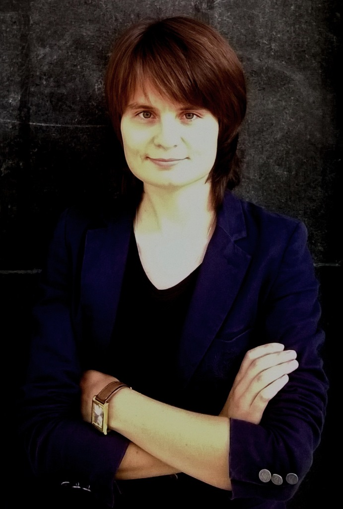

REVUE MÉTHODE
http://revuemethode.org
Merci pour votre message !

Elena SYDOROVA, rédactrice en chef de la rédaction « Méthode », est Docteur ès Sciences Techniques, Maître de conférences à la chaire « Technologie de constructions mécaniques », Vice-Doyenne du Département Français des Sciences et Techniques de l’Université Nationale Technique de Donetsk et membre du Conseil scientifique du Centre des Hautes Études Franco-Allemandes pour la Construction Européenne.
Durant ses études, elle s’engagea dans plusieurs projets culturels dont les plus importants furent le théâtre francophone universitaire, qui participa au Festival théâtral « REUTEULEU » à Lyon en 2005, et le journal francophone « Sans Frontières » depuis 2006.
Après son diplôme de Master Recherche en Technologie de constructions mécaniques obtenu en 2008, Elena SYDOROVA débute une carrière professionnelle comme représentante de la Société « Agrocoop - France Distribution » tout en étant professeur-assistant, et doctorant et jusqu’à l’obtention du grade de Docteur en 2013.
Étant boursier du Gouvernement français, en 2010-2011 elle réalise un projet scientifique en génie mécanique au Laboratoire « Génie de production » à l’École Nationale d’Ingénieurs de Tarbes.
Actuellement ses activités universitaires sont axées sur trois orientations principales : la formation d’ingénieurs, le français sur objectifs spécifiques et la coopération internationale.
Ayant plus des 50 travaux scientifiques et méthodiques, Elena SYDOROVA enseigne le français scientifique et technique et le cycle des disciplines qui concernent le génie mécanique et la fabrication mécanique en français et en russe. Elle s’est par ailleurs distinguée en tant que responsable du projet de recherche d'État, comme dirigeante des stages des étudiants de l'École Supérieure des Ingénieurs de l'Équipement Rural de Medjez El Bab dans les entreprises et les laboratoires du Donbass. Elle fut enfin une des organisatrices des conférences internationales scientifiques et méthodiques en Tunisie.
Co-fondatrice de l’Institut franco-russe de Donetsk, Elena SYDOROVA contribue au renforcement des relations entre les représentants de la culture francophone et la culture russe dans les différents domaines : culturels, scientifiques, industriels, de l’enseignement et d’autres en développement.
Le Dialogue au nom de l’avenir : la Russie et le reste du monde un siècle après
Nouvelles découvertes pour Pierre Malinowski. Rencontre avec notre historien chercheur
Les deuxièmes et troisièmes Rencontres francophones de l’Institut franco-russe de Donetsk
Entrevue avec Hubert Fayard, Président du Centre de Représentation de la République Populaire de Donetsk en France
Le Centre de Représentation officielle de la République Populaire de Donetsk désormais ouvert à Marseille !
Neuf questions à Pierre Malinowski
Entrevue avec Catherine BALOGH venue dans le Donbass pour aider les « enfants pas comme les autres »
Deux héros morts la même semaine…
Les Brigandes dans le Donbass : Entrevue
Les Rencontres francophones de l’Institut
Rencontre avec les Brigandes
Rencontre avec Nikola Mirković, auteur, chercheur indépendant et spécialiste du Kosovo-Métochie
REVUE MÉTHODE
http://revuemethode.org
Partager cette page